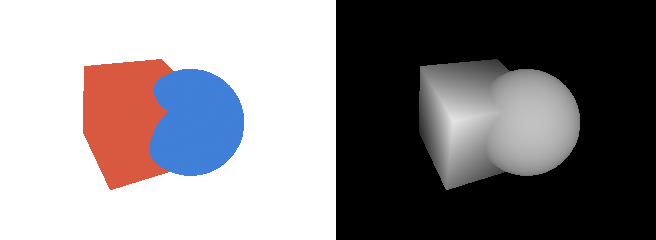
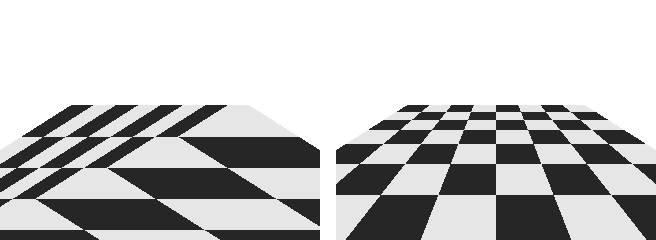

3 次元のラスタライズ
本章では、2 次元の図形のラスタライズの三角形のラスタライズと、座標変換と投影の座標変換を組み合わせて、3 次元の物体を描くレンダラーを作る。複数の物体が重なるときに手前のものだけを描く方法（隠面消去）と、透視投影で属性を正しく補間する方法も説明する。
本章のコードは renderer.py にある。
三角形メッシュ
3 次元の物体の表面は、多数の三角形をつなぎ合わせたもので表す。これを三角形メッシュ（ポリゴンメッシュ）という。三角形メッシュは、次の 2 つの配列で表すのが一般的である。
頂点の配列: 頂点ごとの属性（位置、法線、テクスチャ座標など）を並べたもの
面の配列: 三角形ごとに、3 つの頂点の番号を並べたもの
隣り合う三角形は頂点を共有するので、頂点の番号で面を表すと、同じ座標を何度も記録せずに済む。
36@dataclass
37class Mesh:
38 """三角形のメッシュ。
39
40 positions、normals、uvs は頂点ごとの属性で、行の数は頂点の数に等しい。
41 faces は三角形ごとに 3 つの頂点の番号を並べたもので、外側から見て
42 反時計回りの順に並べる。
43 """
44
45 positions: FloatArray # (頂点の数, 3)
46 normals: FloatArray # (頂点の数, 3)
47 uvs: FloatArray # (頂点の数, 2)
48 faces: IntArray # (三角形の数, 3)
面の頂点は、物体の外側から見て反時計回りに並べる。この順序で、三角形の表と裏を区別する。
1 つの頂点が持てる法線は 1 つだけである。立方体の角の頂点は 3 つの面に属するが、面ごとに法線の向きが異なる。そのため、立方体は面ごとに専用の頂点を持たせ、24 個（6 面 × 4 頂点）の頂点で表す。一方、球のように表面がなめらかな物体では、隣り合う三角形で頂点を共有し、頂点の法線を表面の本来の向きに合わせる。
84def make_sphere(n_lon: int = 48, n_lat: int = 24) -> Mesh:
85 """半径 1 の球を、経線 n_lon 本、緯線 n_lat 本で区切って作る(UV 球)。"""
86 lon = np.linspace(0.0, 2.0 * np.pi, n_lon + 1)
87 lat = np.linspace(0.0, np.pi, n_lat + 1)
88 lon_grid, lat_grid = np.meshgrid(lon, lat)
89 x = np.sin(lat_grid) * np.cos(lon_grid)
90 y = np.cos(lat_grid)
91 z = -np.sin(lat_grid) * np.sin(lon_grid)
92 positions = np.stack([x, y, z], axis=-1).reshape(-1, 3)
93 u = lon_grid / (2.0 * np.pi)
94 v = 1.0 - lat_grid / np.pi
95 uvs = np.stack([u, v], axis=-1).reshape(-1, 2)
96
97 faces = []
98 row = n_lon + 1
99 for j in range(n_lat):
100 for i in range(n_lon):
101 a = j * row + i # 左上
102 b = a + row # 左下
103 # 極に接する四角形は三角形に縮退するので、1 つだけ作る。
104 if j > 0:
105 faces.append((a, b + 1, a + 1))
106 if j < n_lat - 1:
107 faces.append((a, b, b + 1))
108 # 球の中心は原点なので、位置ベクトルがそのまま法線になる。
109 return Mesh(positions, positions.copy(), uvs,
110 np.array(faces, dtype=np.int64))
描画の流れ
本資料のレンダラーは、次の順に処理を行う。
頂点の処理: 全ての頂点の座標に MVP 行列を掛け、クリップ座標に変換する。続いて透視除算とビューポート変換を行い、スクリーン座標を求める。
三角形ごとの処理: 裏を向いた三角形を捨てる（背面カリング）。
ラスタライズ: 三角形が覆う画素を求め、頂点の属性を補間する。
深度テスト: 画素ごとに、すでに描かれている面より手前にあるかを調べ、手前にある場合だけ書き込む（Z バッファー法）。
シェーディング: 書き込まれた属性から、画素の色を計算する。
1 から 4 を行うのが draw_mesh() で、結果をフレームバッファーに書き込む。フレームバッファーは、画素ごとの深度と、画素ごとに補間した属性を格納する配列の集まりである。
147class FrameBuffer:
148 """描画結果を書き込む画像の集まり。
149
150 depth は各画素の深度(正規化デバイス座標の z、小さいほど手前)で、
151 何も描かれていない画素は無限大である。attributes には、画素ごとに
152 補間した頂点の属性を名前ごとに格納する。
153 """
154
155 def __init__(self, width: int, height: int,
156 channels: dict[str, int]) -> None:
157 self.width = width
158 self.height = height
159 self.depth: FloatArray = np.full((height, width), np.inf)
160 self.attributes: dict[str, FloatArray] = {
161 name: np.zeros((height, width, n)) for name, n in channels.items()
162 }
163
164 @property
165 def covered(self) -> BoolArray:
166 """何かが描かれた画素で True となる配列。"""
167 return np.asarray(np.isfinite(self.depth))
5 のシェーディングは、ライティングとシェーディングとテクスチャマッピングで、フレームバッファーの属性を使って画像全体の色をまとめて計算する。このように、先に全ての物体の可視性を確定させ、後から見えている画素だけの色を計算する方法を、遅延シェーディング（ディファードシェーディング）という。GPU の標準的な描画では、ラスタライズした画素ごとにすぐ色を計算するが、計算の内容は同じである。
draw_mesh() の全体は次のとおりである。2 次元の図形のラスタライズの rasterize_triangle() で 1 画素ずつ行っていた判定を、三角形を囲む長方形の画素について NumPy の配列演算でまとめて行っている。
176def draw_mesh(fb: FrameBuffer, mvp: FloatArray, mesh: Mesh,
177 attributes: dict[str, FloatArray], cull_back: bool = True,
178 perspective_correct: bool = True) -> None:
179 """メッシュを描き、深度と属性をフレームバッファーに書き込む。
180
181 mvp はモデル、ビュー、投影の変換を掛け合わせた行列である。
182 attributes には頂点ごとの属性を、fb の attributes と同じ名前で渡す。
183 """
184 clip = to_clip(mvp, mesh.positions)
185 w = clip[:, 3]
186 # 透視除算とビューポート変換(y 軸は下向き)。
187 sx = (clip[:, 0] / w + 1.0) * 0.5 * fb.width
188 sy = (1.0 - clip[:, 1] / w) * 0.5 * fb.height
189 sz = clip[:, 2] / w
190
191 for i0, i1, i2 in mesh.faces:
192 # 簡略化のため、カメラの近くの面(ニアクリップ面)より手前に頂点が
193 # ある三角形は、切り取らずに丸ごと捨てる。
194 if min(w[i0], w[i1], w[i2]) <= 0.0 or \
195 min(sz[i0], sz[i1], sz[i2]) < -1.0:
196 continue
197 area = edge_function(sx[i0], sy[i0], sx[i1], sy[i1],
198 np.array(sx[i2]), np.array(sy[i2]))
199 if area == 0.0:
200 continue
201 # 画面の y 軸は下向きなので、表を向いた(反時計回りの)三角形は
202 # 画面上では時計回りになり、area が負になる。
203 if cull_back and area > 0.0:
204 continue
205
206 # 三角形を囲む長方形の画素の中心の座標を作る。
207 x_min = max(int(np.floor(min(sx[i0], sx[i1], sx[i2]))), 0)
208 x_max = min(int(np.ceil(max(sx[i0], sx[i1], sx[i2]))), fb.width)
209 y_min = max(int(np.floor(min(sy[i0], sy[i1], sy[i2]))), 0)
210 y_max = min(int(np.ceil(max(sy[i0], sy[i1], sy[i2]))), fb.height)
211 if x_min >= x_max or y_min >= y_max:
212 continue
213 px, py = np.meshgrid(np.arange(x_min, x_max) + 0.5,
214 np.arange(y_min, y_max) + 0.5)
215
216 # 重心座標を求め、三角形の内側の画素を選ぶ。
217 b0 = edge_function(sx[i1], sy[i1], sx[i2], sy[i2], px, py) / area
218 b1 = edge_function(sx[i2], sy[i2], sx[i0], sy[i0], px, py) / area
219 b2 = 1.0 - b0 - b1
220 inside = (b0 >= 0.0) & (b1 >= 0.0) & (b2 >= 0.0)
221
222 # 深度テスト: すでに書かれている深度より手前の画素だけを残す。
223 z = b0 * sz[i0] + b1 * sz[i1] + b2 * sz[i2]
224 region = (slice(y_min, y_max), slice(x_min, x_max))
225 passed = inside & (z < fb.depth[region])
226 if not passed.any():
227 continue
228 fb.depth[region][passed] = z[passed]
229
230 # 属性の補間に使う重み。透視補正では各頂点の 1 / w を掛けて
231 # 補間し、最後に重みの合計で割る。
232 if perspective_correct:
233 q0, q1, q2 = b0 / w[i0], b1 / w[i1], b2 / w[i2]
234 total = q0 + q1 + q2
235 q0, q1, q2 = q0 / total, q1 / total, q2 / total
236 else:
237 q0, q1, q2 = b0, b1, b2
238 for name, values in attributes.items():
239 value = (q0[..., None] * values[i0] + q1[..., None] * values[i1]
240 + q2[..., None] * values[i2])
241 fb.attributes[name][region][passed] = value[passed]
以降の節では、このコードの要素を順に説明する。
背面カリング
閉じた物体（中身の詰まった物体）では、裏を向いた面は必ず表を向いた面の陰に隠れる。そのため、裏を向いた三角形は描かずに捨ててよい。これを背面カリングという。描く三角形の数がおよそ半分になるので、処理が速くなる。
三角形の表と裏は、スクリーン座標での頂点の並び順で判定できる。外側から見て反時計回りに並べた三角形は、カメラから表が見えていれば画面上でも反時計回りに、裏が見えていれば時計回りに並ぶ。並び順は、2 次元の図形のラスタライズのエッジ関数で求めた三角形の符号付きの面積で分かる。ただし、スクリーン座標は y 軸が下向きなので、y 軸が上向きの場合と符号が逆になる。draw_mesh() では、area が正の三角形を裏向きとして捨てている。
背面カリングは、閉じていない物体（1 枚の板など）では使えない。そのため、draw_mesh() では引数 cull_back で無効にできるようにしている。
Z バッファー法による隠面消去
複数の三角形が同じ画素に重なるとき、最も手前の三角形だけを描く必要がある。これを隠面消去という。
単純な方法は、カメラから遠い三角形から順に描き、手前の三角形で上書きすることである。これを画家のアルゴリズムという。しかし、この方法では、三角形の並べ替えに時間がかかるうえ、互いに交差する三角形や、互いに覆い合う三角形を正しく描けない。
Z バッファー法は、画素ごとに「これまでに描いた面のうち最も手前のものの深度」を記録しておく方法である。深度を記録する配列を、Z バッファー（深度バッファー）という。
描画を始める前に、Z バッファーの全ての画素を無限遠（本資料では
np.inf）で初期化する。三角形をラスタライズするとき、画素ごとに深度を補間する。
補間した深度が Z バッファーの値より小さい（手前にある）場合だけ、その画素の色と属性を書き込み、Z バッファーも更新する。
三角形を描く順序によらず、正しい結果が得られる。図 11 は、互いに交差する立方体と球を描いた結果と、Z バッファーに書き込まれた深度を濃淡で表したもの（手前ほど明るい）である。立方体と球が交わる部分も正しく描かれている。

図 11 描画結果（左）と Z バッファーの深度（右、手前ほど明るい）
draw_mesh() では、深度として正規化デバイス座標の z を使っている。座標変換と投影の透視投影の行列から分かるとおり、この値はカメラからの奥行き \(d\) に対して \(1/d\) の 1 次式で変化する。近い範囲では細かく、遠い範囲では粗く変化するので、遠くで重なった 2 つの面の前後を判定できず、描画がちらつくことがある。これを Z ファイティングという。ニアクリップ面の距離 \(n\) をむやみに小さくしないことが、基本的な対策である。
透視補正補間
画面上の重心座標は、3 次元の空間での重心座標とは一致しない。透視投影では、奥にある部分ほど画面上で縮んで写るからである。そのため、2 次元の図形のラスタライズと同じように画面上の重心座標で属性を補間すると、奥行きの方向に属性がゆがむ。
正しく補間するには、各頂点の属性 \(a_i\) をその頂点のクリップ座標の \(w_i\)（透視投影ではカメラからの奥行き）で割った値と、\(1 / w_i\) を、それぞれ画面上の重心座標 \(b_i\) で補間し、最後に割り算をする。
\(a_i / w_i\) と \(1 / w_i\) は、画面上で線形に変化する量なので、画面上の重心座標で正しく補間できる。これを透視補正補間という。draw_mesh() の perspective_correct が真の場合の処理が、この式に当たる。なお、深度として使う正規化デバイス座標の z は、もともと画面上で線形に変化する量なので、補正せずに補間してよい。
図 12 は、2 つの三角形でできた床に市松模様を描いたものである。左の図は透視補正をせずに補間したもので、模様が三角形の対角線で折れ曲がり、奥行きの間隔も不自然である。右の図は透視補正補間を行ったもので、模様が正しく描かれている。

図 12 透視補正なし（左）と透視補正あり（右）
GPU は、頂点の属性を自動的に透視補正して補間する。
クリッピング
カメラの後ろにある頂点は \(w \le 0\) となり、透視除算の結果が意味を持たなくなる。そのため、正しくは、クリップ座標で三角形をニアクリップ面で切り取り、見える部分だけを新しい三角形として描く。これをクリッピングという。画面の上下左右からはみ出す部分も、同様に切り取る場合がある。
本資料のレンダラーでは、簡単のため、ニアクリップ面より手前に頂点がある三角形を丸ごと捨てている。そのため、カメラのすぐ近くを通る大きな三角形は描かれない。テクスチャマッピングの床の図では、この制約を避けるため、床をカメラの少し前から奥に向かって広げている。画面の上下左右へのはみ出しは、ラスタライズする範囲を画面の内側に限ることで処理している。